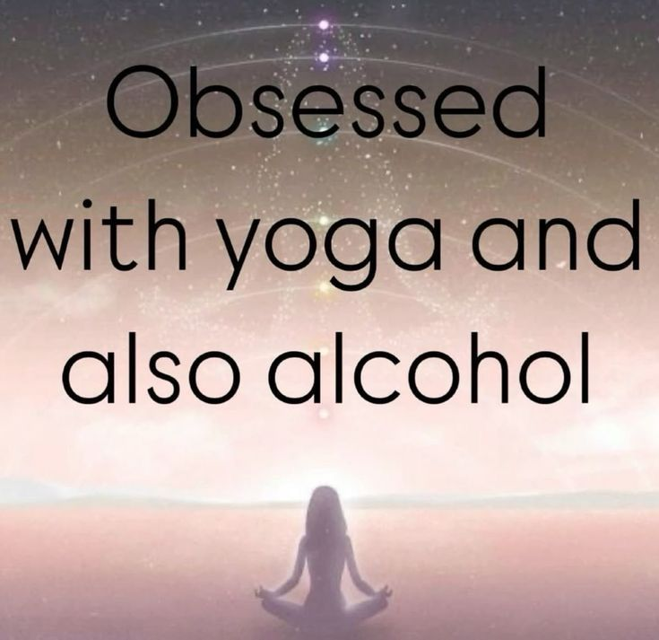

you can't have it all.

you can't pop your pimples and expect to have a clean face. you can't deviate and distract yourself and think you're gonna be the smartest in the room. you can't be sedentary and sit all day long and be in shape. even though i know impossible and hard things can be real while many people have a great disbelief, i still have to build a foundation for that to be true. i can't just walk away thinking it's gonna be easy and require no effort. instead, the right thing to do would be to go straight to the things you expect to have: have a clean face be the smartest in the room be in shape of course we have to make mistakes in order to sharpen our response to distractions and stimuli, but don't forget your real purpose. within the pain of learning you find passion and now you're not doing it just for the discipline, you wanna keep the amount of resistance you had to put against your old self to get here; and that passion and love come faster than you think.